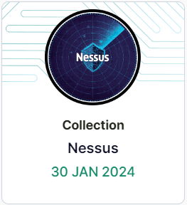
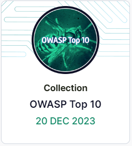
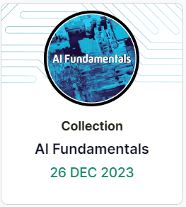

| Name |
Badge |
Description |
| Cyber Fundamentals |
 |
This role is for anyone who is new to cybersecurity or has recently started their
cybersecurity career. It will ensure you have the basics you need to succeed. |
| Threat Hunter - Beginner |
 |
This role is for those new to cyber threat intelligence (CTI) and novice threat hunters. It
also supports anyone looking to gain knowledge and develop skills in CTI, threat research,
breaches, and threat actors. |
| Security Hygeine |
 |
This introductory pathway is designed for a general audience and covers the key elements of
protecting yourself online, both at work and at home. Everyone has a role to play in keeping
themselves and their organization secure. Are you ready to be a security hero? |
| Management, Risk, and Compliance |
 |
This role is for anyone who deals with risk and compliance in cybersecurity. |
| Technical Fundamentals |
 |
This role is for anyone who is new to cybersecurity or has recently started their
cybersecurity career. It will ensure you have the technical essentials required to succeed.
|
| Introduction to Digital Forensics |
|
This pathway introduces topics that junior digital forensics analysts and incident
responders will encounter, from the digital process and ethics to security and incident
response fundamentals. Topics include many of those in FOR308. |
| Social Engineering |
 |
This collection explores the topic of social engineering. It covers what social engineering
is, the tactics and techniques commonly used to persuade us to click on malicious links or
part with information, and how you can protect yourself from falling victim to social
engineering. |
| Ethics & Laws |
 |
This skillset covers some of the legal and ethical challenges you may come across in
cybersecurity. Make sure you're staying on the right side of the law by learning about bug
bounty programs and the limits of ethical hacking. |
| Wireshark |
|
Want to examine exactly what's happening in your network? Wireshark is the tool for the job!
This series will guide you through the basics of Wireshark and how to take full advantage of
its functionalities and features, so you can learn more about the data traveling through
your network. |
| MITRE ATT&CK |
|
The MITRE ATT&CK framework is a matrix of tactics and techniques used by attackers. It
provides a key source of information for building threat models and defensive methodologies
to better classify attacks and assess risk. |
| Ransomware |
 |
Ransomware has come a long way since the 1980s. It's now one of the biggest threats to
companies and has been the end goal of countless breaches in recent years. In this series
you will learn about the different strains of ransomware and how they operate. |
| Nmap |
|
Nmap is one of the most popular network scanner tools available. In this introductory
series, you will learn what Nmap is and how to use it to enumerate for hosts, ports, and
services on a target. You'll also explore Nmap features such as NSE and various outputting
formats, as well as how to optimize your scans to maximise your results and identify
potentially vulnerable targets. |
| Nessus |
 |
Nessus is a vulnerability assessment scanner developed by Tenable Network Security to
identify vulnerabilities in systems and applications. In this series, you'll explore Nessus,
and learn how to scan different types of host using Nessus. You'll also learn about the
different types of scans available with Nessus, as well as how to analyze the results from
the tool. |
| Autopsy |
 |
Autopsy is an open-source digital forensics tool used by law enforcement, the military, and
within the private sector worldwide. Get to grips with the ins and outs of Autopsy in this
skill series and learn how to investigate cybercrime. |
| Splunk |
 |
Splunk is a software platform used to analyze, search, investigate and visualize
machine-generated data collected from websites, applications, devices and more. In this
series, we will explore the tool and its features, alongside how to use it for data
analysis. |
| Elastic Playground |
|
This unique collection offers you the opportunity to interact with a fully functional
Elastic instance, loaded with a diverse range of data types. You'll get to experiment,
manipulate, and analyze different data sets, providing a comprehensive understanding of
Elastic's capabilities. Whether you're a beginner or an experienced user, this collection
will enhance your skills and deepen your understanding of Elastic's versatility in handling
various data types. Dive in and start your journey of discovery with Elastic. |
| Elastic Stack |

|
The Elastic Stack is a three-layered stack of open-source tools that, when fully assembled,
allows users to analyze data from any type of source and in any format. This skill series
will guide you through the Elastic Stack's simple yet sophisticated beats and dashboards for
professional and efficient log analysis. |
| Elastic Data Ingest |
 |
In this collection, you will learn about Elastic Beat integrations and how they enable
real-time data collection, processing, and analysis. You will gain hands-on experience with
logs and test your analysis skills using Kibana and several default dashboards. |
| OWASP Top 10 |

|
This series gives an overview of the OWASP Top 10. This includes an introduction to the list
as well as a high-level coverage of the current list. |
| Packet Analysis |
|
Reading packets and understanding the structure of packet captures are essential skills in
cybersecurity. This series will introduce the main packet analysis tools and how to look for
flags inside packet headers. |
| Introducing the Cyber Kill Chain |
 |
The cyber kill chain is a cybersecurity model developed in 2011 by Lockheed Martin. It's a
phase-based model that's often used to understand and dissect an adversarial attack
structure. In this series, we'll explore each phase of the cyber kill chain and its
significance. |
| The Cyber Kill Chain |
 |
This series will walk you through each of the seven steps of the Cyber Kill Chain, exploring
a specific attack scenario. You'll learn the tools and techniques used by defenders to
analyze an attack. |
| Introduction to Velociraptor |
 |
Velociraptor is a powerful digital forensic tool that enables investigators to quickly
triage and analyze live systems. It is designed to be run on a live system, rather than a
forensic image, and allows for the collection of volatile data, the identification of
suspicious processes, the creation of memory dumps, and more. This makes it particularly
useful for incident response, where time is of the essence and quick identification of
malicious activity is critical. |
| SUNBURST Supply Chain Compromise |
 |
In December 2020, FireEye identified that the SolarWinds Orion software package had been
compromised by a nation-state. This was subsequently installed onto the devices of several
thousand organizations, leading to potential compromise. This series takes a closer look at
the malware implants, the APT operators and some of their TTPS. |
| Active Directory Basics |
 |
Active Directory (AD) is a Microsoft technology designed for network management. This
introductory collection will guide you through what AD is, how it's structured, and its
functionalities. You'll learn how to navigate the Active Directory Users and Groups console,
effectively manage users, groups, and organizational units within a domain, and how to add a
workstation to a domain. You will also explore key AD topics such as the distinction between
NTLM and Kerberos, group policy management, the mechanism of AD replication, and the
intricacies of managing domain-joined machines. This collection is your gateway to mastering
the essentials of Active Directory. |
| CTI First Principles |
 |
Cyber Threat Intelligence is a discipline that is growing in both scale and relevance to
cybersecurity. It involves proactively identifying and reporting on threats to an
organization. In this collection, you can expect to learn about the fundamentals of
intelligence, threat actors, and creating and testing hypotheses. |
| Introduction to Cryptography |
|
This series is aimed at all skill levels, in it you'll learn about the foundation concepts
behind cryptography. |
| NIST – Guidelines on Security and Privacy in Public Cloud Computing (800-144) |
 |
Guidance time! This series covers the US's National Institute of Standards and Technology
Guidelines on Security and Privacy in Public Cloud Computing. |
| NIST – Security and Privacy Controls for Information Systems and Organizations (800-53) |
|
NIST Special Publication 800-53 outlines protective measures for the security and privacy of
organizations, systems, and individuals. |
| Introduction to Penetration Testing |
 |
This series will look at penetration testing concepts and give the introductory notions
needed to start exploring the field. These labs are theoretical and do not require any
practical skills. |
| Introduction to Windows Exploitation |
|
Windows exploitation is an advanced practice that takes time and commitment to learn
properly. In this series, we will explore the condition of the Windows exploitation market,
the most common types of Windows vulnerabilities, alongside their function and impact,
useful terminology surrounding the topic, and our recommended pre-requisite knowledge before
starting the practical series of full Windows exploitation. |
| Linux Command Line |
|
Learn how to use the Linux Command Line Interface (CLI) and how it can be used to perform
different tasks. The labs in this skills series range from navigating around a file
structure to combining multiple commands to achieve a specific goal. |
| Introduction to Linux Exploitation |
|
Linux exploitation can be a daunting field to step into, with a steep list of knowledge
prerequisites needed for some of the most basic vulnerabilities. In this series, you'll gain
foundational knowledge on Linux-based software exploitation, learning about the fundamental
concepts, how the exploit development process works, and commonly used tools. |
| Scanning |
 |
Scanning is a crucial element of a penetration test as the information gained from a scan
directly affects the way a tester approaches the rest of their attack. Learn all about pen
test scanning in this skill series. |
| Data Privacy |
|
This collection provides an introduction to key data privacy concepts and regulations and
how they apply to individuals. |
| Data Handling |
|
Data is now a part of everyone's everyday lives. Learning about data handling is essential
for everyone in today's digital age. It helps you understand how to protect your personal
information and maintain online privacy. By learning how to handle data properly, you can
avoid scams, identity theft, and other cybercrimes. It also empowers you to make informed
decisions about securely sharing your data and using online services. Additionally, data
handling knowledge can benefit the organization you work for, as you can maintain the
security and integrity of its data, helping to prevent data breaches and protect sensitive
information. These introductory labs provide a strong foundation for the concept of data
handling. |
| Digital Footprint |
|
This collection explores the topic of digital footprints. It covers what they are, how they
pose risks to you and your organization, well-known cases where digital footprints have been
used for criminal activities, and how to protect yourself. |
| Physical Security |
|
This collection explores what physical security is, its risks to you and your organization,
and how malicious actors exploit poor physical security practices. It also covers the
measures you can take to protect yourself and your organization when working remotely and in
your office. |
| Windows Concepts |
|
This series provides hands-on access to Windows OS, looking at registry access, alternate
data streams, and system variables in a safe environment. With a greater understanding of
security controls within Windows, you will be able to identify and exploit weaknesses. |
| Human Factors in Cybersecurity |
|
People are the "weakest link". It's the standard narrative across cybersecurity as the role
of human factors is often misunderstood. In this collection, you will explore the role of
human factors in cybersecurity and how you can make people your strongest defense. |
| AI Fundamentals |
 |
In recent years, artificial intelligence (AI) has become an increasingly important tool in
various fields, including healthcare, financial services, and cybersecurity. In this
collection, you'll explore the fascinating world of AI, including some of the broader terms
that surface when you read about AI, from machine learning to deep learning and neural
networks. |
| Hack Your First Computer |
|
This series will place you in your first Red Team, performing your first exercise. You will
be given guided instructions to compromise a computer. Your first hack! |
| Cyber 101 |
|
This skill series provides a strong cybersecurity knowledge base to anyone starting out in
the industry. We'll take you through the core concepts of cybersecurity and how to stay
secure online. |
| Cyber Safety |
|
Get to grips with all things cyber! Everything you need to know about the cyber world is
covered here. |
| Staying Safe Online |
|
A company is only as secure as its people! In this skill series, you'll learn everything
required to keep both you and your company safe online. |
| Compliance |
|
Having compliance standards in place can help keep an enterprise running. Without them
valuable information can be left exposed, creating serious vulnerabilities. By the end of
this skill series you will be up to speed on essential compliance standards and policies.
|
| OT Fundamentals |
|
Operation Technology (OT) is a term that covers the hardware and software for Industrial
Control Systems or other physical systems. This collection will teach you the fundamental
terminology and application of frameworks that differentiate IT and OT systems before taking
a deeper look at Incident Response strategy in OT environments. |